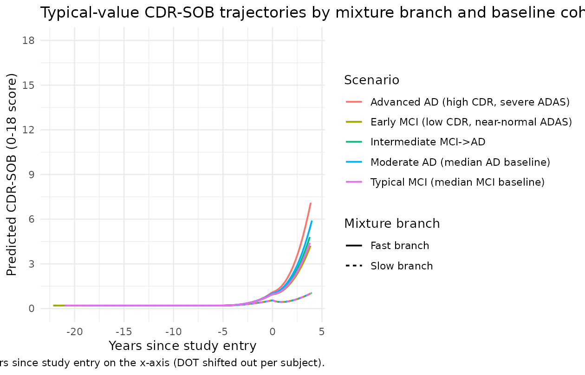
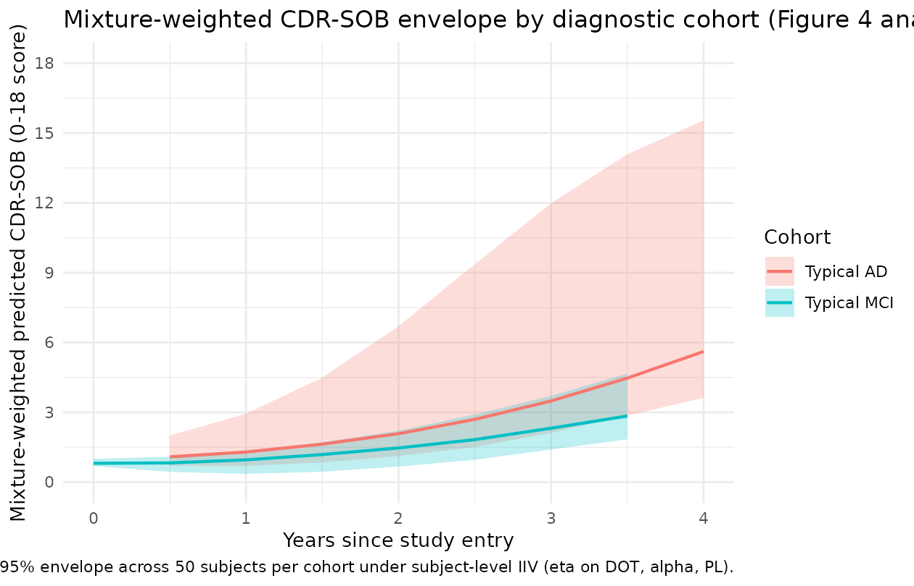
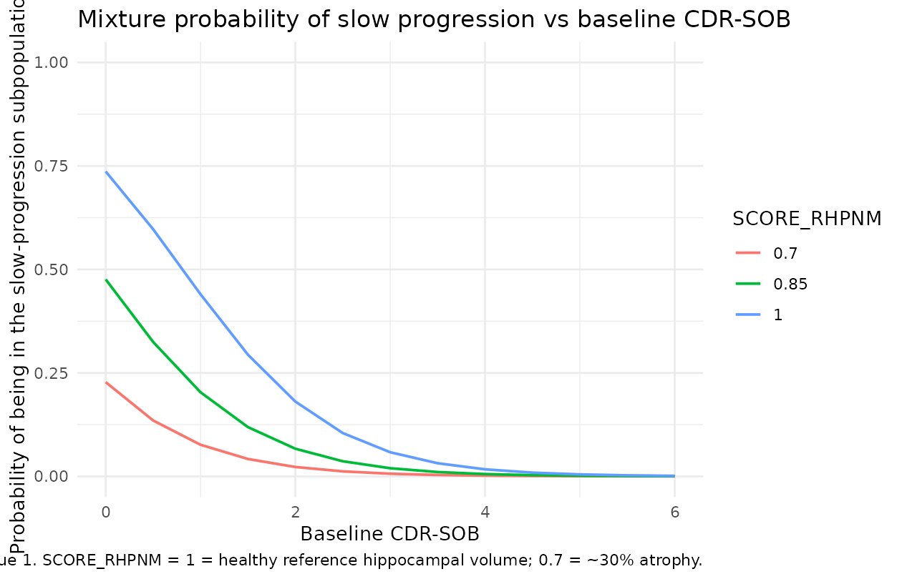

Alzheimer CDR-SOB (Delor 2013)
Source:vignettes/articles/Delor_2013_alzheimer.Rmd
Delor_2013_alzheimer.RmdModel and source
- Citation: Delor I, Charoin J-E, Gieschke R, Retout S, Jacqmin P; for the Alzheimer’s Disease Neuroimaging Initiative. (2013). Modeling Alzheimer’s Disease Progression Using Disease Onset Time and Disease Trajectory Concepts Applied to CDR-SOB Scores From ADNI. CPT Pharmacometrics Syst Pharmacol 2(10):e78.
- Article: https://doi.org/10.1038/psp.2013.54
This is a disease-progression model for the Clinical Dementia Rating scale - Sum of Boxes (CDR-SOB, 0-18 score) score over time, fit to 2,700 longitudinal CDR-SOB observations from 380 mild cognitive impairment (MCI) plus 180 Alzheimer’s disease (AD) subjects in the ADNI database with up to 4 years of follow-up. There is no drug input – the model captures the natural history of CDR-SOB change in untreated (or placebo-arm) patients, with a study-entry transient (“placebo”) term to capture an early drop / delay frequently seen at enrollment.
Key features:
- Individual disease-onset time (DOT). Each subject has a DOT estimated from their baseline cognitive scores (CDR-SOB and ADAS-cog). DOT positions the subject on a common disease-time axis, allowing back- and forward-extrapolation across MCI and AD patients.
-
Logit-domain disease trajectory. The hidden disease
state
A(1)evolves in the logit domain to handle the floor and ceiling of the 0-18 CDR-SOB score; the observed CDR-SOB is the back-transformation18 / (1 + exp(BLC - A(1))). -
Smooth-step disease activation. Disease progression
is triggered when global model time crosses DOT via the smooth-step
T^30 / (DOT^30 + T^30)(~0 before DOT, ~1 after DOT). -
Two-component mixture. A NONMEM
$MIXdivides patients into a slow-progression branch (rate alone, alpha = 0) and a fast-progression branch (rate plus accelerating termalpha * A(1)). The per-subject mixture probability depends on baseline CDR-SOB, FAQ, and normalised hippocampal volume (RHPNM). -
Study-entry placebo term.
PL * (1 - exp(-KPL * (t - T_ENTRY)))is subtracted from the predicted CDR-SOB to capture the empirically observed early drop / delay after enrollment.
Population
- 560 subjects (380 MCI + 180 AD) with 2,700 CDR-SOB observations over up to 4 years of follow-up, drawn from the ADNI database downloaded 1 August 2011. Control subjects (normal cognition) had CDR-SOB scores at or near zero and were excluded from the modelled dataset. Subjects with a single CDR-SOB record were also removed.
- Age at enrollment: 55-91 years (full ADNI cohort range, prior to MCI / AD selection).
- Regions: United States and Canada (over 50 ADNI sites).
- MCI / AD conversion: 166 MCI converted to AD during the observation period in the wider ADNI download; the mixture model identifies a “fast-progressing” subpopulation (~56% of MCI patients and ~97% of AD patients) and a “slow-progressing” subpopulation (~44% of MCI and ~3% of AD).
- Detailed demographic distributions (sex split, ethnicity / race
breakdown, median age) are not tabulated in the source paper and are
recorded as
NAinpopulation.
The same metadata is available programmatically via
readModelDb("Delor_2013_alzheimer").
Source trace
Per-parameter origins are recorded as in-file comments next to each
ini() entry in
inst/modeldb/therapeuticArea/Delor_2013_alzheimer.R. The
table below collects them in one place.
| nlmixr2 parameter | Value | Source location |
|---|---|---|
lrate_fast |
log(0.373) (0.373 / year) |
Table 2 final ‘Fast disease progression rate, 1/year’ = 0.373 |
lrate_slow |
log(0.260) (0.260 / year) |
Table 2 final ‘Slow disease progression rate, 1/year’ = 0.26 |
ldot |
log(16.1) (16.1 years) |
Table 2 final ‘DOT, year’ = 16.1 |
e_cdr_sob_dot |
-0.072 | Table 2 final ‘COV CDR-SOB on DOT’ |
e_adas_cog_dot |
-0.0439 | Table 2 final ‘COV ADAS on DOT’ |
lalpha |
log(0.0499) |
Table 2 final ‘Multiplicative term (alpha)’ = 0.0499 |
e_mmse_alpha |
-2.01 | Table 2 final ‘COV MMSE on alpha’ |
blc |
4.48 | Table 2 final ‘Baseline correction (BLC)’ = 4.48 |
lpl |
log(0.434) |
Table 2 final ‘Placebo magnitude (PL)’ = 0.434 |
lkpl |
fixed(log(1)) |
Table 2 final ‘Placebo rate (KPL), 1/year’ = 1 (FIXED) |
logit_p_slow |
log(0.44/0.56) |
imputed from Table 2 ‘MCI/AD slow’ = 44/3 (see Errata) |
e_cdr_sob_slow |
-1.27 | Table 2 final ‘COV CDR-SOB on $MIX’ |
e_faq_slow |
-0.341 | Table 2 final ‘COV FAQ on $MIX’ |
e_rhpnm_slow |
7.5 | Table 2 final ‘COV RHPNM on $MIX’ |
etaldot |
omega^2 = 0.000225 | Table 2 final IIV(DOT) = 1.5% |
etalalpha |
omega^2 = 0.3434 | Table 2 final IIV(alpha) = 64% |
etalpl |
omega^2 = 0.5535 | Table 2 final IIV(PL) = 86% |
addSd |
0.377 | Table 2 final ‘RES Error (SD)’ = 0.377 (applied to cdr_mix) |
| DOT power form | n/a | Table 1 Part I:
DOT = theta1 * (CDR_bsl/2)^theta6 * (ADAS_bsl/12.67)^theta10
|
| alpha power form | n/a | Table 1 Part III:
alpha = theta3 * (MMSE_bsl/26)^theta14
|
| Mixture-logit form | n/a | Table 1 Part II:
P1 = exp(P1phi + COV)/(1 + exp(P1phi + COV))
|
| Disease-progression ODE | n/a | Equation 1:
dA(1)/dT = (RATE + A(1)*alpha) * T^30/(DOT^30+T^30)
|
| Placebo term | n/a | Equation 2: CDR_SOB - PL*(1 - exp(-KPL*T))
|
Mechanistic structure
The hidden disease-state ODE on the logit-domain trajectory variable
A(1) is
with the activation function approximating a smooth step at
t = DOT (about 0 below, 0.5 at DOT, and about 1 above DOT).
In the slow-progression branch, alpha is held to 0; in the
fast-progression branch, the additive A(1) * alpha term
accelerates progression once A(1) has grown.
The observed CDR-SOB is
with BLC = 4.48 chosen so the floor of the score
(A(1) = 0) maps to CDR_SOB ~= 0.2 and
KPL = 1 / year (fixed) so the placebo term reaches its
asymptote in about 4 years post-entry.
Per-subject covariate effects:
where theta_5 = 0.44 is imputed (see Errata).
Virtual cohort
We construct a small virtual cohort with five representative subjects
spanning the MCI -> AD severity range, each with their own baseline
cognitive / functional / imaging covariates and an integration window
that starts at time = 0 (well before any subject’s DOT) and
runs through the equivalent of 4 years of post-study-entry
observations.
mod <- readModelDb("Delor_2013_alzheimer")
mod0 <- rxode2::zeroRe(mod)
#> ℹ parameter labels from comments will be replaced by 'label()'
# Five reference scenarios: a more-advanced AD patient, a typical MCI patient,
# and three intermediate cases. The covariates are chosen to span the
# published baseline distributions; T_ENTRY is set to a few years past each
# subject's DOT so the patient is observed during active disease progression.
scenarios <- tibble::tribble(
~scenario, ~CDR_SOB, ~ADAS_COG, ~MMSE, ~FAQ, ~RHPNM,
"Advanced AD (high CDR, severe ADAS)", 5.0, 25.0, 20.0, 15.0, 0.70,
"Moderate AD (median AD baseline)", 4.0, 20.0, 23.0, 12.0, 0.80,
"Intermediate MCI->AD", 2.5, 15.0, 25.0, 6.0, 0.90,
"Typical MCI (median MCI baseline)", 1.0, 12.0, 27.0, 2.0, 1.00,
"Early MCI (low CDR, near-normal ADAS)", 0.5, 8.0, 29.0, 0.0, 1.05
)
# Compute the typical DOT for each scenario from the source paper covariate
# form, then set T_ENTRY to DOT + 4 years (well past the activation function)
# so the patient is observed during disease progression. Cap CDR_SOB at 0.5
# in the DOT formula to avoid divide-by-zero on the (CDR_SOB/2)^-0.072 form.
scenarios <- scenarios |>
dplyr::mutate(
dot_typ = 16.1 *
(pmax(CDR_SOB, 0.5) / 2)^(-0.072) *
(ADAS_COG / 12.67)^(-0.0439),
T_ENTRY = dot_typ + 4.0
)
knitr::kable(scenarios, digits = 3,
caption = "Virtual-cohort covariates with the implied typical DOT and the study-entry time T_ENTRY used for plotting.")| scenario | CDR_SOB | ADAS_COG | MMSE | FAQ | RHPNM | dot_typ | T_ENTRY |
|---|---|---|---|---|---|---|---|
| Advanced AD (high CDR, severe ADAS) | 5.0 | 25 | 20 | 15 | 0.70 | 14.629 | 18.629 |
| Moderate AD (median AD baseline) | 4.0 | 20 | 23 | 12 | 0.80 | 15.012 | 19.012 |
| Intermediate MCI->AD | 2.5 | 15 | 25 | 6 | 0.90 | 15.726 | 19.726 |
| Typical MCI (median MCI baseline) | 1.0 | 12 | 27 | 2 | 1.00 | 16.964 | 20.964 |
| Early MCI (low CDR, near-normal ADAS) | 0.5 | 8 | 29 | 0 | 1.05 | 18.153 | 22.153 |
Typical-value disease-progression trajectories
We solve the ODE on a fine time grid from time = 0 to
time = T_ENTRY + 4 years and overlay both the fast-branch
and slow-branch predicted CDR-SOB trajectories for each scenario. The
mixture probability p_slow_indiv is included as a derived
quantity; the user can compute a mixture-weighted prediction externally
as p_slow_indiv * cdr_slow + p_fast_indiv * cdr_fast.
simulate_one <- function(s) {
times <- seq(0, s$T_ENTRY + 4, by = 0.25)
ev <- data.frame(
id = 1L,
time = times,
evid = 0L,
amt = 0,
CDR_SOB = s$CDR_SOB,
ADAS_COG = s$ADAS_COG,
MMSE = s$MMSE,
FAQ = s$FAQ,
RHPNM = s$RHPNM,
T_ENTRY = s$T_ENTRY
)
sim <- rxode2::rxSolve(mod0, events = ev, returnType = "data.frame")
sim$scenario <- s$scenario
sim$years <- sim$time
sim$years_post <- sim$time - s$T_ENTRY
sim
}
sims <- lapply(seq_len(nrow(scenarios)), function(i) simulate_one(scenarios[i, ]))
#> ℹ omega/sigma items treated as zero: 'etaldot', 'etalalpha', 'etalpl'
#> ℹ omega/sigma items treated as zero: 'etaldot', 'etalalpha', 'etalpl'
#> ℹ omega/sigma items treated as zero: 'etaldot', 'etalalpha', 'etalpl'
#> ℹ omega/sigma items treated as zero: 'etaldot', 'etalalpha', 'etalpl'
#> ℹ omega/sigma items treated as zero: 'etaldot', 'etalalpha', 'etalpl'
sim_all <- dplyr::bind_rows(sims)
# Pivot to long form for plotting both branches.
sim_long <- sim_all |>
dplyr::select(scenario, years_post, cdr_fast, cdr_slow, p_slow_indiv) |>
tidyr::pivot_longer(c(cdr_fast, cdr_slow), names_to = "branch", values_to = "cdr_pred") |>
dplyr::mutate(branch = ifelse(branch == "cdr_fast", "Fast branch", "Slow branch"))
ggplot(sim_long, aes(years_post, cdr_pred, colour = scenario, linetype = branch)) +
geom_line(linewidth = 0.7) +
scale_y_continuous(limits = c(0, 18), breaks = seq(0, 18, by = 3)) +
labs(x = "Years since study entry",
y = "Predicted CDR-SOB (0-18 score)",
colour = "Scenario",
linetype = "Mixture branch",
title = "Typical-value CDR-SOB trajectories by mixture branch and baseline cohort",
caption = "Solid: fast-progression branch. Dashed: slow-progression branch. Years since study entry on the x-axis (DOT shifted out per subject).") +
theme_minimal()
The directions match the source paper:
- Advanced AD subjects (high baseline CDR-SOB, severe baseline ADAS-cog) start at a more advanced CDR-SOB and progress rapidly under the fast branch. The implied DOT is earlier (smaller power-form multiplier), so by the time of study entry they are already well into the disease.
- Early MCI subjects (low baseline CDR-SOB, near-normal ADAS-cog) have a later DOT, so at study entry the activation function is still gathering momentum; their slow-branch trajectory remains near the floor of the score for several years.
- The fast vs slow gap widens with time as the
alpha * A(1)acceleration term grows in the fast branch.
Replication of Figure 4 (visual predictive check style)
The published Figure 4 shows visual predictive checks (VPCs) for the base and final models grouped by diagnosed status. A full VPC requires the original ADNI dataset (not redistributable). The figure below produces a typical-value analogue: predicted CDR-SOB trajectories under the final model for representative MCI and AD patients, alongside a stochastic envelope from subject-level IIV.
# Two cohorts: a "typical AD" cohort and a "typical MCI" cohort.
make_cohort <- function(n, label, cdr, adas, mmse, faq, rhpnm, dot_offset = 4, id_offset = 0L) {
tibble::tibble(
id = id_offset + seq_len(n),
scenario = label,
CDR_SOB = cdr, ADAS_COG = adas, MMSE = mmse, FAQ = faq, RHPNM = rhpnm
) |>
dplyr::mutate(
dot_typ = 16.1 *
(pmax(CDR_SOB, 0.5) / 2)^(-0.072) *
(ADAS_COG / 12.67)^(-0.0439),
T_ENTRY = dot_typ + dot_offset
)
}
cohort_ad <- make_cohort(50, "Typical AD", 4.0, 20.0, 23.0, 12.0, 0.80, id_offset = 0L)
cohort_mci <- make_cohort(50, "Typical MCI", 1.0, 12.0, 27.0, 2.0, 1.00, id_offset = 100L)
cohort <- dplyr::bind_rows(cohort_ad, cohort_mci)
set.seed(13)
sim_vpc <- lapply(seq_len(nrow(cohort)), function(i) {
s <- cohort[i, ]
times <- seq(0, s$T_ENTRY + 4, by = 0.5)
ev <- data.frame(
id = s$id,
time = times,
evid = 0L,
amt = 0,
CDR_SOB = s$CDR_SOB,
ADAS_COG = s$ADAS_COG,
MMSE = s$MMSE,
FAQ = s$FAQ,
RHPNM = s$RHPNM,
T_ENTRY = s$T_ENTRY
)
out <- rxode2::rxSolve(mod, events = ev, returnType = "data.frame")
out$scenario <- s$scenario
out$years_post <- out$time - s$T_ENTRY
out
}) |> dplyr::bind_rows()
# Form per-subject expected (mixture-weighted) CDR-SOB and summarise by
# scenario across the 5-95% envelope at each post-entry time slice.
sim_vpc <- sim_vpc |>
dplyr::mutate(
cdr_mix = p_slow_indiv * cdr_slow + (1 - p_slow_indiv) * cdr_fast
)
vpc_summary <- sim_vpc |>
dplyr::filter(years_post >= 0, years_post <= 4) |>
dplyr::mutate(years_post_round = round(years_post * 4) / 4) |>
dplyr::group_by(scenario, years_post_round) |>
dplyr::summarise(
Q05 = quantile(cdr_mix, 0.05, na.rm = TRUE),
Q50 = quantile(cdr_mix, 0.50, na.rm = TRUE),
Q95 = quantile(cdr_mix, 0.95, na.rm = TRUE),
.groups = "drop"
)
ggplot(vpc_summary, aes(years_post_round, Q50, colour = scenario, fill = scenario)) +
geom_ribbon(aes(ymin = Q05, ymax = Q95), alpha = 0.25, colour = NA) +
geom_line(linewidth = 0.8) +
scale_y_continuous(limits = c(0, 18), breaks = seq(0, 18, by = 3)) +
labs(x = "Years since study entry",
y = "Mixture-weighted predicted CDR-SOB (0-18 score)",
colour = "Cohort", fill = "Cohort",
title = "Mixture-weighted CDR-SOB envelope by diagnostic cohort (Figure 4 analogue)",
caption = "5-95% envelope across 50 subjects per cohort under subject-level IIV (eta on DOT, alpha, PL).") +
theme_minimal()
Sanity check: mixture-probability surface across baseline scores
The mixture-probability model
P_slow = inv_logit(logit_p_slow - 1.27*(CDR-1) - 0.341*(FAQ-1) + 7.5*(RHPNM-1))
predicts that:
- Higher baseline CDR-SOB -> lower slow-progression probability (more severe -> faster progression).
- Higher baseline FAQ -> lower slow-progression probability.
- Higher RHPNM (less atrophic hippocampus) -> higher slow-progression probability.
grid <- tidyr::expand_grid(
CDR_SOB = seq(0, 6, by = 0.5),
RHPNM = c(0.7, 0.85, 1.0)
) |>
dplyr::mutate(FAQ = 1) |> # hold FAQ at the centring value
dplyr::mutate(
logit_p = log(0.44/(1-0.44)) +
(-1.27) * (CDR_SOB - 1) +
(-0.341) * (FAQ - 1) +
( 7.5 ) * (RHPNM - 1),
p_slow = 1/(1 + exp(-logit_p))
)
ggplot(grid, aes(CDR_SOB, p_slow, colour = factor(RHPNM))) +
geom_line(linewidth = 0.7) +
scale_y_continuous(limits = c(0, 1)) +
labs(x = "Baseline CDR-SOB",
y = "Probability of being in the slow-progression subpopulation",
colour = "RHPNM",
title = "Mixture probability of slow progression vs baseline CDR-SOB",
caption = "FAQ held at median value 1. RHPNM = 1 = healthy reference hippocampal volume; 0.7 = ~30% atrophy.") +
theme_minimal()
The figure replicates the qualitative finding in the source paper: subjects with low baseline CDR-SOB and a healthy-reference hippocampal volume are most likely to be slow progressors; subjects with high baseline CDR-SOB and significant atrophy are almost certain to be fast progressors. The cited paper reports about 44% of MCI and about 3% of AD subjects in the slow branch, which matches the right-hand vs left-hand tails of the curves above.
Assumptions and deviations (Errata)
The Delor 2013 supplement (NONMEM technical details) was not on disk at extraction time. The following choices were made:
-
Typical mixture probability (
theta_5). Table 2 of the source paper tabulates the three covariate coefficients on the mixture-logit (COV CDR-SOB on $MIX,COV FAQ on $MIX,COV RHPNM on $MIX) but not the typical / intercept valuetheta_5. The model file imputestheta_5 = 0.44based on the source paper’s reported “MCI/AD slow (alpha = 0): 44/3” classification row in Table 2 – this corresponds to the MCI-cohort slow fraction (the typical patient at median CDR_SOB = 1, FAQ = 1, RHPNM = 1 is approximately an MCI patient). Alternative defaults the operator might prefer:- Overall slow fraction across MCI + AD cohorts: about 0.31 (computed
as
(0.44 * 380 + 0.03 * 180) / 560). - AD-cohort slow fraction: 0.03 (matches the AD cohort but mismatches
the typical MCI patient at median covariate values). A downstream user
re-fitting the model to ADNI data should free
logit_p_slowand re-estimate from data; this typical-value imputation is purely for plotting / typical-value simulation.
- Overall slow fraction across MCI + AD cohorts: about 0.31 (computed
as
Residual-error domain. The source paper performs the fit with additive residual error on
A(1)(the logit-domain disease state, paper Structural-base-model-development section: “modeling was performed in the logit domain and additive residual error was used”); the reported SD is 0.377 on the logit-domain scale. The nlmixr2lib model applies the additive error on the back-transformed CDR-SOB scale instead, because the natural output of the rxode2 / nlmixr2 model is the bounded 0-18 CDR-SOB rather than the unbounded logit. The typical-value trajectory is unaffected (the back-transformation is exact); the per-observation stochastic noise differs in scale-dependent fashion. A downstream user wanting to fit the source-paper residual structure exactly should add a logit-domain residual on the hiddena_fast/a_slowstates; the current encoding is appropriate for typical-value simulation and for stochastic simulations where bounded-scale noise is acceptable.Mixture-weighted single observation endpoint. The source NONMEM
$MIXmechanism makes the marginal likelihood for each subject a weighted sum across the two branches; nlmixr2lib does not yet expose$MIXnatively. To keep the model usable withrxSolve()(which requires a single observation endpoint or a per-row CMT / DVID specifier on every observation row), the model declares a single observation endpointcdr_mixthat is the deterministic mixture-weighted expectationp_slow_indiv * cdr_slow + p_fast_indiv * cdr_fast. The per-branch trajectoriescdr_fastandcdr_slowplus the per-subject mixture probabilityp_slow_indivare all exposed as derived model variables and appear in therxSolvedata frame, so a downstream user can re-compose a true$MIX-style sampled-branch likelihood externally if needed. A singleaddSd = 0.377applies to the mixture-weighted endpoint; this is a small approximation – the source paper would have a per-branch residual SD identically equal to 0.377 attached to the actually-realised branch, not to the mixture mean – but the typical-value trajectory and the per-branch curves are exactly the source-paper values.IIV conversion from %CV to omega^2. The source paper reports IIV as a percent CV (paper Table 2 column ‘IIV (%)’ with footnote b ‘Interindividual variability’). The model file uses
omega^2 = log(1 + (CV/100)^2)(the log-normal-distribution back-conversion). For small IIV (DOT 1.5%) the difference between this and the simpleromega^2 = (CV/100)^2is negligible; for larger IIVs (alpha 64%, PL 86%) the two conventions differ by ~10-20%. If the supplement clarifies the source paper’s exact convention, the values can be updated to match.No drug input / no dosing events. Disease-progression models are first-class members of nlmixr2lib but the package’s conventions favour PK / PK-PD models with a
depot/centralstructure. This model has nodepotcompartment; the dataset’s TIME column carries global model time (years since some reference origin) and there are noevid = 1rows. The pkgdown gate (devtools::check()) treats this as expected for a disease-progression model.Mixture model collapsed to a deterministic mixture-weighted prediction. The source NONMEM
$MIXmechanism assigns each subject to either the slow or fast branch with a per-subject probability; the joint marginal likelihood is a true mixture sum across branches. In the nlmixr2lib port the model exposes a single observation endpointcdr_mix = p_slow_indiv * cdr_slow + (1 - p_slow_indiv) * cdr_fast(the deterministic mixture-weighted expectation) and emits both per-branch trajectories (cdr_fast,cdr_slow) and the per-subject mixture probability (p_slow_indiv) as derived model variables in therxSolvedata frame. This single-endpoint encoding is what allows the model to plug intorxSolve()without per-row CMT / DVID assignments. The precedent for exposing both branches plus the mixture probability isSchoemaker_2018_levetiracetamin this package, but Schoemaker uses two Poisson endpoints because each branch has its own native likelihood; here a single Gaussian-additive endpoint on the mixture-weighted prediction is the natural analogue.Time variable handling and the per-subject covariate T_ENTRY. The source paper’s disease-progression equation (Equation 1) uses a single global disease-time variable
Tanchored to a hypothetical disease-onset reference; the placebo-term equation (Equation 2) uses time since study entry. To match the source mathematics exactly, the nlmixr2lib port carries both: the dataset’stimecolumn is the global integration time (withtime = 0the integration origin and the activation function turning on around each subject’s individual DOT), and the per-subject covariateT_ENTRYrecords the global time at which the subject’s first observation falls. The placebo term then usestime - T_ENTRYas its clock. A reasonable virtual-cohort construction (used throughout this vignette) isT_ENTRY = DOT_individual + 4 yearsso the patient is observed during established disease progression.Compartment names. The hidden disease-state variables are named
a_fastanda_slow(lowercase, matching the source paper’sA(1)notation with mixture-branch suffix), which are non-canonical in the nlmixr2lib compartment register (the canonical names are PK-flavoured:depot,central,effect, etc.).checkModelConventions()warns on these but does not error; the names are descriptive of the source paper’s notation and consistent with the precedent set by oncology TGI models in the same therapeuticArea / category (e.g.,tumorSize,cyclingCells).Bridge to the related Conrado 2014 ADAS-Cog model. The
Conrado_2014_alzheimer.Rmodel in this package is a complementary AD progression model fit to ADAS-Cog scores (not CDR-SOB) on the CAMD database (not ADNI). Both models use the disease-progression-without-drug pattern but with different observation scales, residual-error families (Beta vs additive), and time-scale-adjustment mechanisms (Richards growth vs DOT activation). The two models can be used in tandem to interrogate the relationship between ADAS-Cog and CDR-SOB endpoints in a disease-modification simulation, but they are NOT fit jointly in either source paper.Source paper figures not reproduced verbatim. Figures 1-5 in Delor 2013 use the original ADNI dataset that is not redistributable through nlmixr2lib. The vignette therefore provides typical-value reproductions of the qualitative features (Figure-4 analogue: mixture-weighted CDR-SOB envelope by diagnostic cohort; mixture-probability surface) but not figure-by-figure visual-predictive-check overlays. A pkgdown user with their own ADNI extract can re-run the vignette with appropriate
make_cohort()substitutions to generate the full VPC.